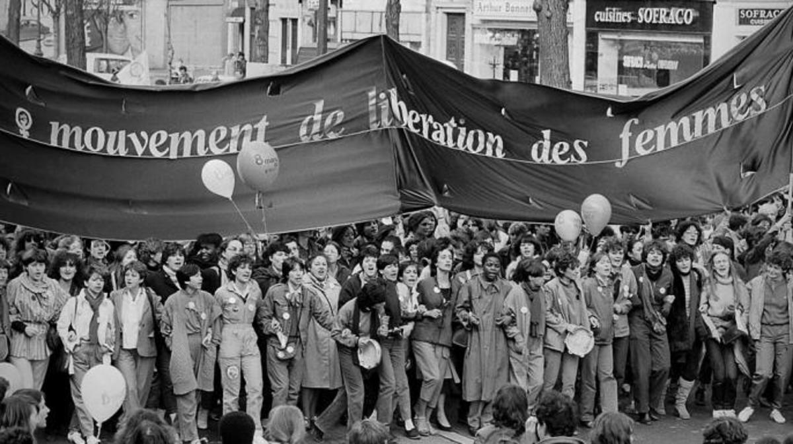
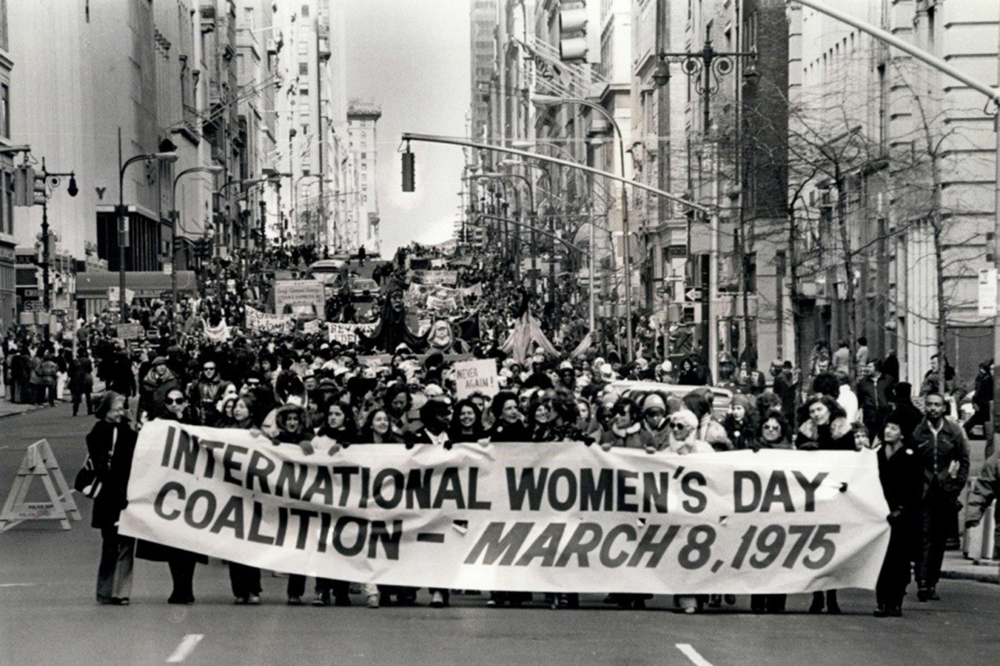
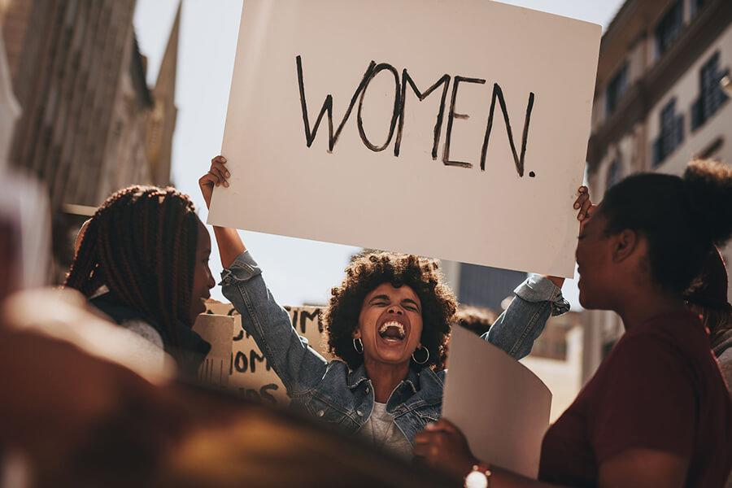

Womens' Day History!

A BEGINNING : 1908 - 1909
1908 was a period where the injustice and prejudice towards women was finally receiving the attention it needed. A clear example of this being the women's march which took place more than a century ago with 15,000 women marching for an improved salary, fewer working hours and the right to vote! A year later, the United States of America celebrated their first every Womens' day!

A CHANGE : 1910 - 1911
An International Conference of Working Women in 1910 was held in Copenhagen. This was where a woman proposed the idea of an "International Womens' Day". In 1911 the International Womens' Day had been celebrated in a few European countries at somewhat the start of the year. The countries who had taken part were Austria, Denmark, Germany & Switzerland. A score for women equality!

A GIGANTIC CHANGE : 1975
As Womens' Day became more widely celabrated aroung the globe, the United Nations officially celebrated their first International Womens' Day!

Now : 2022
This year Womens' Day is centred widely around #BreakTheBias. I'm sure that we can all agree that the Bias or Prejudice towards women has decreased significantly over the years. I'm not saying that it's perfect but it is better than it used to be. We have had several privileges ( such as the ability to vote ) given to us by the inspiring women who came before us. Breaking the Bias (to me at least) means shattering the glass ceiling, standing up for yourself and those who need it, being the wonderful woman you are and being yourself.